Lab 2 - TRANSIT NETWORKING#
1. Objective#
Build Transit Network in Azure, GCP and AWS using Aviatrix Multicloud Transit hub and spoke model.
In this lab, we will use Aviatrix CoPilot to connect three major clouds, i.e. Azure, GCP and AWS. The workloads in VPCs/VNets in all three clouds must communicate without manual configuration on the native consoles.
2. Multicloud Connectivity Overview#
Enterprises are relying increasingly on multiple clouds (multicloud) providers. However, setting up the connectivity between those providers is difficult. Moreover, maintaining and monitoring the tunnels is time-consuming and cumbersome to troubleshoot.
Aviatrix simplifies this by providing simple, point-and-click tunnel creation between cloud providers.
Additionally, Aviatrix gives you a single, centralised location from which to troubleshoot and monitor your connections.
3. Topology#
In this lab, as shown in the topology below, we will configure the grey Aviatrix gateways, the grey attachments between Transit-Spoke and the grey peerings between Transit-Transit, but only in the following regions:
AWS: us-east-2
GCP: us-central-1
AZURE: us-west (only spoke1)
The rest of the topology has been pre-deployed to save time, including the test instances/VMs.
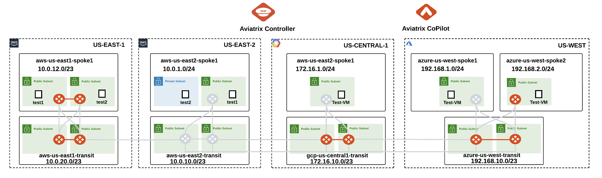 Figure 20: Initial pre-provisioned topology
Note
The test VPCs/VNet you created in Lab 1 will not be used in other labs.
In this lab, the Transits will be deployed in pairs, but the Spokes will not.
The CoPilot dashboard should look something like this:
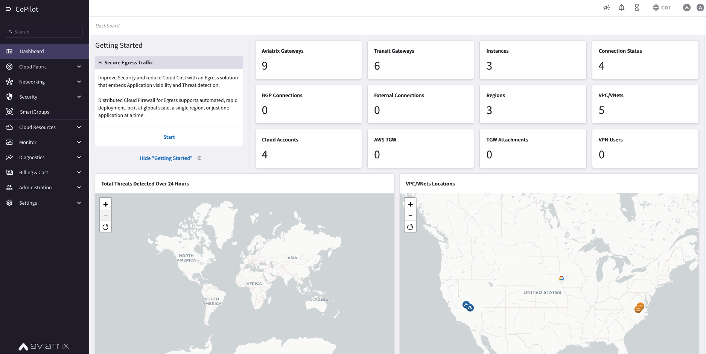 Figure 21: Dashboard
Before starting building your multicloud infrastructure, adjust the fetch timers on the CoPilot.
Hint
Go to CoPilot > Settings > Resources > Task Server
Ensure that Fetch Topology, Fetch Instances, Fetch GW Routes and Fetch VPC Routes intervals are set to “1 Second” each and then click on SAVE.
 Figure 22: Task Server
Figure 22: Task Server
 Figure 23: Fetch Topology
Figure 23: Fetch Topology
 Figure 24: Fetch Instances
Figure 24: Fetch Instances
 Figure 25: Fetch GW
Figure 25: Fetch GW
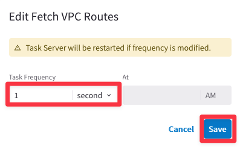 Figure 26: Fetch VPC
Afterwards, click on Commit.
 Figure 27: Commit
Figure 27: Commit
Hint
Ensure to Refresh the web page to see the changes applied, successfully.
Note
These are very aggressive settings. In a Production environment, you should not set these intervals that frequently!
4. Initial configuration#
Go to CoPilot > Dashboard and click on the widget called "Aviatrix Gateways". When you begin this lab, you should have nine gateways in your pod:
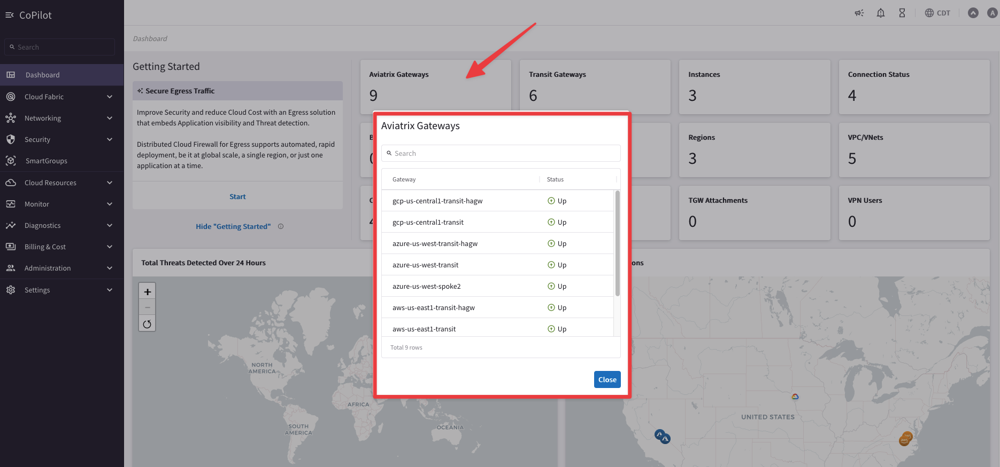 Figure 28: Commit
Nevertheless, if you go to CoPilot > Cloud Fabric > Gateways > Overview (default tab), you will notice that the number of Transit Gateways is set to three, whereas the number of Spoke Gateways is set to two.
 Figure 29: Cluster
Figure 29: Cluster
This view within the Cloud Fabric section does not indicate the exact number of gateways but it refers to the number of clusters, per each type of gateway.
Go to CoPilot > Cloud Fabric > Gateways > Transit Gateways and expand the three drop-down lists. You can find out that there are a total of six Transit Gateways (Public IPs may differ):
 Figure 30: Transit GWs Clusters
Figure 30: Transit GWs Clusters
Furthermore, you can notice that the name of the cluster matches exactly the name of the first Transit Gateway, whereas the name of the second Transit Gateway is similar to the name of the first gateway but it has appended a "-hagw"; this is imposed by the “aviatrix_transit_gateway” Terraform resource.
Note
You can deploy up to maximum two Transit Gateways per each Transit VPC/VNet/VCN.
Go to CoPilot > Cloud Fabric > Gateways > Spoke Gateways and expand the unique drop-down list. You can find out that there are a total of three Spoke Gateways (once again, the Public IPs may differ):
 Figure 31: Transit GWs Clusters
Figure 31: Transit GWs Clusters
You can notice that the cluster in AWS comprises two Spoke Gateways, whereas in Azure there is just a single Spoke Gateway. This is a valid deployment. The number of Spoke Gateways that you should deploy per each Spoke VPC/VNet/VCN is dictated by your architecture design.
Note
You can deploy up to maximum fifteen Spoke Gateways per each Spoke VPC/VNet/VCN.
4.1. Aviatrix Transit Gateways#
In this section, you will experience the power and simplicity of the Aviatrix platform by deploying (i.e. creating) 5 gateways:
First Transit gateway in AWS US East 2: aws-us-east2-transit
Second Transit gateway in AWS US East 2: aws-us-east2-transit-1
Spoke gateway in AWS US East 2: aws-us-east2-spoke1
Spoke gateway in Azure West US: azure-us-west-spoke1
Spoke gateway in GCP US Central 1: gcp-us-central1-spoke1
Warning
Please pay close attention to each step, as a misconfiguration could result in 20+ minutes of lost time!
Go to CoPilot > Cloud Fabric > Gateways > Transit Gateways > + Transit Gateway
 Figure 32: +Transit Gateway
Figure 32: +Transit Gateway
Deploy Aviatrix Transit Gateways in AWS East-2 region. To save time, Aviatrix Transit Gateways in Azure, GCP and AWS east-1 region have already been pre-deployed in pairs for this lab.
4.1.1.Transit Gateway in AWS US-EAST-2#
Ensure these parameters are entered in the pop-up window "Create Transit Gateway".
Name: aws-us-east2-transit
Cloud: AWS (Standard)
Account: aws-account
Region: us-east-2 (Ohio)
VPC ID: aws-us-east2-transit (Make sure you don’t select aws-us-east2-spoke VPC)
Instance Size: c5n.large
High Performance Encryption: On
Click on + Instance (Make sure you deploy also the Second Transit Gateway, in a different subnet).
Attach to Subnet (row 1): us-east-2a
Attach to Subnet (row 2): us-east-2b
Public IP: Allocate New Static Public IP
Note
As soon as you select High Performance Encryption, /26 subnets will appear in the drop-down window.
Click SAVE.
 Figure 33: Create Transit Gateway
Figure 33: Create Transit Gateway
You will immediately get a message as follows.
 Figure 34: Gateway deployment in progress
Figure 34: Gateway deployment in progress
You may check the status of the gateway creation in the top right corner by expanding the task icon.
 Figure 35: Task icon
Figure 35: Task icon
This action will instantiate two Transit Gateways with the following names:
aws-us-east2-transit
aws-us-east2-transit-1
Note
The second gateway will receive “-1” appended to its name, in order to differentiate it from the first gateway.
Meanwhile the deployment is happening, you may proceed to the next section of this lab guide to deploy your Spoke gateways.
4.2. Aviatrix Spoke Gateways#
Navigate to the tab immediately to the right, which is Spoke Gateways.
This is CoPilot > Cloud Fabric > Gateways > Spoke Gateways > + Spoke Gateway.
 Figure 36: +Spoke Gateway
Figure 36: +Spoke Gateway
4.2.1. Spoke Gateway in AWS#
Ensure these parameters are entered in the pop-up window "Create Spoke Gateway".
Note
Only one Spoke Gateway will be deployed in VPC aws-us-east2-spoke1.
Name: aws-us-east2-spoke1
Cloud: AWS (Standard)
Account: aws-account
Region: us-east-2 (Ohio)
VPC ID: aws-us-east2-spoke1 (Make sure you don’t select aws-us-east2-transit VPC)
Instance Size: t2.medium
High Performance Encryption: Off
Attach to Subnet: us-east-2a
Public IP: Allocate New Static Public IP
Click SAVE.
 Figure 37: Create Spoke Gateway in AWS
Figure 37: Create Spoke Gateway in AWS
While the gateway is being created, you may proceed to the next section.
4.2.2. Spoke Gateway in Azure#
Repeat the previous steps for Azure, click on the button "+ Spoke Gateway" and ensure these parameters are entered in the pop-up window "Create Spoke Gateway".
Note
Only one Spoke Gateway will be deployed in VNet azure-us-wes-spoke1.
Name: azure-us-west-spoke1
Cloud: Azure (Global)
Account: azure-account
Region: West US
VNet: azure-us-west-spoke1 (Make sure you don’t select azure-us-west-spoke2 VPC)
Instance Size: Standard_B2ms
High Performance Encryption: Off
Attach to Subnet: azure-us-west-spoke1-Public-gateway-subnet-1
Public IP: Allocate New Static Public IP
Warning
Make sure you do not select the subnets that begins with az-1, az-2, or az-3. It is Aviatrix’s recommended practice to deploy gateways in subnets with ‘gateway’ in their name, whereas workloads in subnets that do not have ‘gateway’ in their name).
 Figure 38: Subnet selection
Figure 38: Subnet selection
Do not forget to click on SAVE.
 Figure 39: Spoke GW in Azure
Figure 39: Spoke GW in Azure
While the gateway is being created, you may proceed to the next section.
4.2.3. Spoke Gateway in GCP#
Repeat the previous steps for GCP. Ensure these parameters are entered in the pop-up window "Create Spoke Gateway".
Warning
Only one Spoke Gateway will be deployed in VPC gcp-us-central1-spoke1.
Name: gcp-us-central1-spoke1
Cloud: GCP
Account: gcp-account
VPC: gcp-us-central1-spoke1
Instance Size: n1-standard-1
High Performance Encryption: Off
Attach to Subnet: gcp-us-central1-spoke1-sub1
Zone: us-central1-a
Public IP: Allocate New Static Public IP
Click SAVE.
 Figure 40: Spoke GW in GCP
Figure 40: Spoke GW in GCP
Caution
You can see the progress of gateway deployment at any time by expanding the task icon in the top right corner of the CoPilot.
 Figure 41: Deployment in progress
Figure 41: Deployment in progress
Once all gateways have been created, confirm from CoPilot > Dashboard that 14 gateways exist in your environment:
 Figure 42: Dashboard
Figure 42: Dashboard
After creating the Transit gateways pair in AWS and the Spoke gateways in each cloud, this is how a portion of the topology would look like.
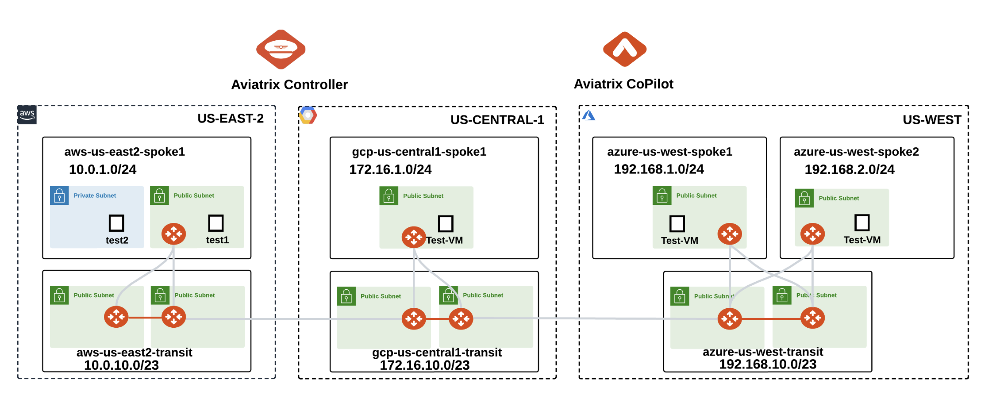 Figure 43: Overview of the new topology state
4.3. Explore the Cloud Fabric#
Go to CoPilot > Cloud Fabric > Topology > Overview (default tab).
 Figure 44: VPC circles
Figure 44: VPC circles
 Figure 45: Expand all the VPCs
Figure 45: Expand all the VPCs
Important
The inner circle represents the Transit Gateway VPCs, and the outer one represents the Spoke Gateway VPCs. It is clearly shown at this stage that the spokes are not connected to the transits yet.
In addition, you can explore the components of any of the gateways in terms of subnets and Virtual Machines that reside within the VPC/VNet.
4.4 Aviatrix Spoke to Transit Gateways Attachments#
In this section you are going to attach the Aviatrix Spoke Gateways created above in each cloud, to their corresponding Aviatrix Transit Gateways.
4.4.1. Spoke to Transit Attachment in AWS#
Go to CoPilot > Cloud Fabric > Gateways > Spoke Gateways and edit the Spoke Gateway aws-us-east2-spoke1, clicking on the pencil icon:
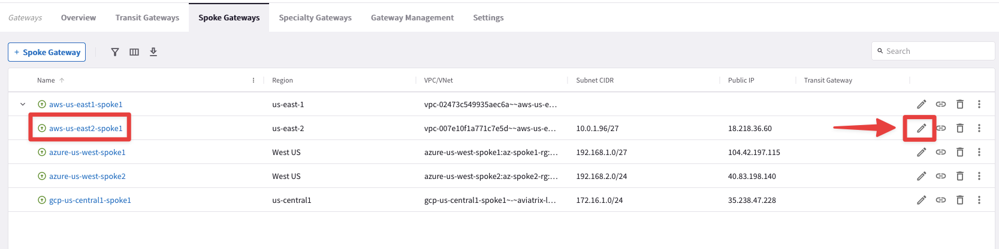 Figure 46: Attachment for AWS
Select the Transit Gateway aws-us-east2-transit from the drop-down window "Attach To Transit Gateway", and then click on Save.
 Figure 47: Edit Spoke in AWS
Figure 47: Edit Spoke in AWS
You will see immediately a message informing that the updating is in progress.
 Figure 48: Update in progress
Figure 48: Update in progress
4.4.2 Spoke to Transit Attachment in Azure#
azure-us-west-spoke1 to azure-us-west-transit
Edit the Spoke Gateway azure-us-west-spoke1 (not the spoke2), clicking on the pencil icon.
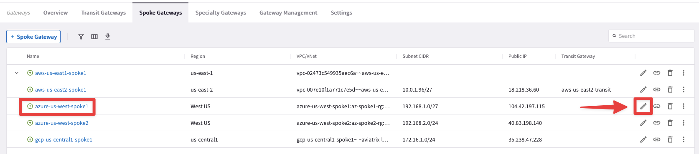 Figure 49: Edit spoke in Azure
Select the Transit Gateway azure-us-west-transit from the drop-down window "Attach To Transit Gateway", and then click on Save.
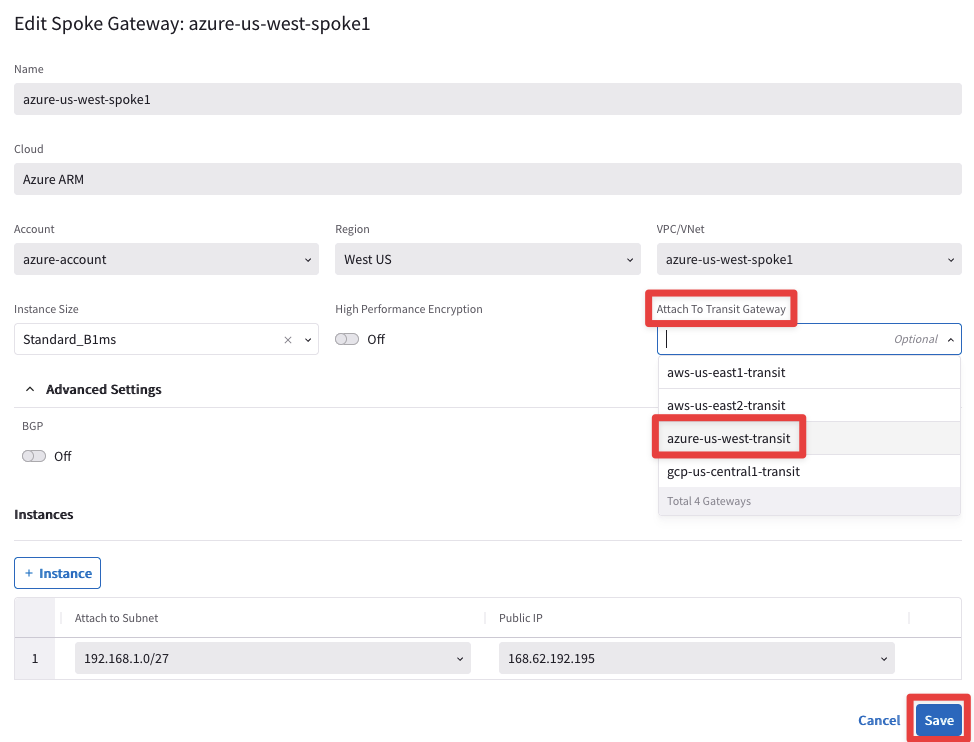 Figure 50: Attachment in Azure
4.4.3. Spoke to Transit Attachment in GCP#
gcp-us-central1-spoke1 to gcp-us-central1-transit
Edit the Spoke Gateway gcp-us-central-spoke1, clicking on the pencil icon:
 Figure 51: Edit spoke in GCP
Figure 51: Edit spoke in GCP
Select the Transit Gateway gcp-us-central1-transit from the drop-down window "Attach To Transit Gateway", and then click on Save.
 Figure 52: Attachment in GCP
Figure 52: Attachment in GCP
Look for these three confirmations through the task icon, before proceeding.
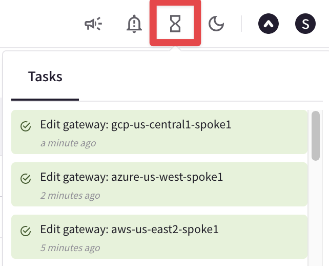 Figure 53: Confirmations
At this point, after attaching Spoke Gateways to their respective Transit Gateways, this is what the overall topology would look like.
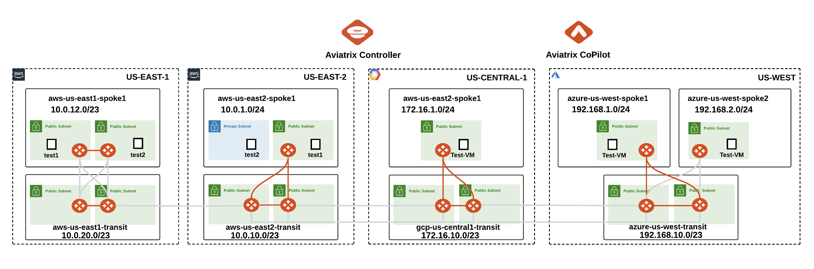 Figure 54: New state of the topology
Note
The Spoke Gateway azure-us-west-spoke2 will be attached to its Transit Gateways in a subsequent lab, likewise the Spoke Gateways in AWS us-east-1 will be attached to the Transit Gateways in the same region only in a subsequent lab.
4.5. CoPilot Verification of Spoke-Transit Attachments#
Go to CoPilot > Cloud Fabric > Topology > Overview
Now, verify the spoke-transit attachments. You can see the dotted lines connecting the 3 spoke gateways to their respective transits.
Tip
Be patient, it will take some minutes before seeing the changes reflected into the topology. Refresh the web page to see the change reflected on the map!
 Figure 55: Attachments
Figure 55: Attachments
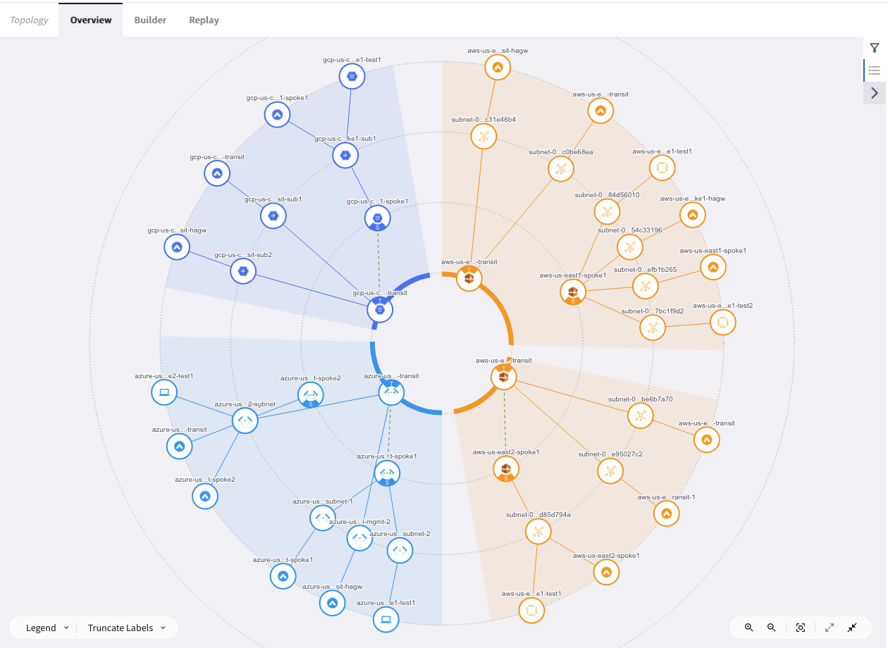 Figure 55: Expanded Topology
4.6. Multicloud Transit Peerings#
In this section you are going to establish the peerings among the Aviatrix Transit Gateways.
Tip
Transit peering is bidirectional. You do not need to configure peering in the opposite direction.
Go back to CoPilot > Cloud Fabric > Gateways > Transit Gateways
4.6.1. AWS and Azure#
aws-us-east2-transit to azure-us-west-transit
Edit the Transit Gateway aws-us-east2-transit, clicking on the pencil icon:
 Figure 56: Edit Transit in AWS
Figure 56: Edit Transit in AWS
Select the Transit Gateway azure-us-west-transit from the drop-down window "Peer To Transit Gateways", and then click on Save.
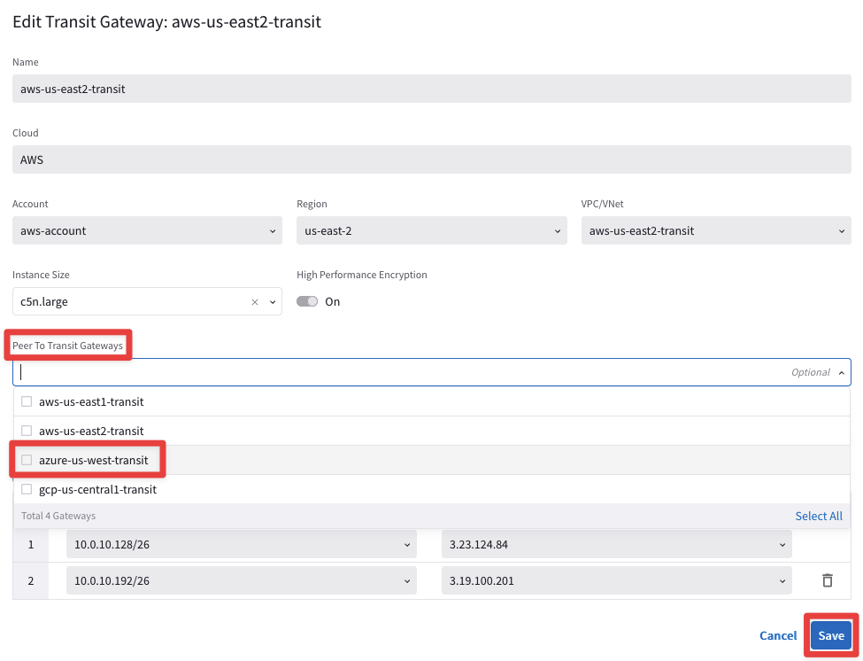 Figure 56: Peering AWS-Azure
4.6.2 Azure AND GCP#
azure-us-west-transit to gcp-us-central1-transit
Edit the Transit Gateway azure-us-west-transit, clicking on the pencil icon:
 Figure 57: Edit Transit in Azure
Figure 57: Edit Transit in Azure
Select the Transit Gateway gcp-us-central1-transit from the drop-down window "Peer To Transit Gateways", and then click on Save.
Figure 58: Peering Azure-GCP
4.6.3. GCP and AWS#
gcp-us-central1-transit to aws-us-east2-transit
Edit the Transit Gateway gcp-us-central1-transit, clicking on the pencil icon:
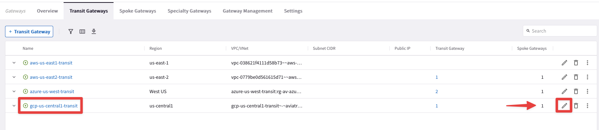 Figure 59: Edit Transit in GCP
Select the Transit Gateway aws-us-east2-transit (not the east1 !) from the drop-down window "Peer To Transit Gateways", and then click on Save.
 Figure 60: Peering GCP-AWS
Figure 60: Peering GCP-AWS
At this point, this is what the overall topology would look like:
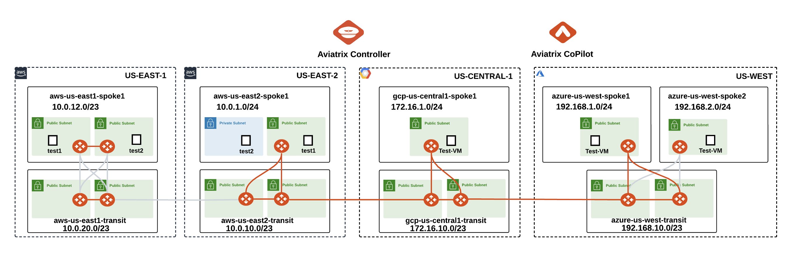 Figure 60: New Topopology state after Peerings deployment
Note
Please pay close attention that the following pending elements will be completed only in a subsequent lab:
Attachment between aws-us-east1-spoke1 and aws-us-east1-transit
Peering between aws-us-east1-transit and aws-us-east2-transit
Attachment between azure-us-west-spoke2 and azure-us-west-transit
5. Verification#
5.1. Verification of Transit Peerings on CoPilot(Cloud Fabric)#
Go to CoPilot > Cloud Fabric > Gateways > Transit Gateways, select the Transit Gateway aws-us-east2-transit, then select the "Connections" tab and finally select the "Transit-Transit Peering" sub-tab: you will see four connections per each peering, that correspond to the four IPSec tunnels.
 Figure 61: Verification
Figure 61: Verification
5.2. Verification of Transit Peerings on CoPilot (Topology)#
Go to CoPilot > Cloud Fabric > Topology > Overview
Note
Refresh the web page!
Verify transit-transit peering. You can now see the dotted lines in the inner circle representing the configured full mesh peering between the three transits.
 Figure 62: Peerings
Figure 62: Peerings
 Figure 63: Expanded Topology
Figure 63: Expanded Topology
5.3. Route Info DB#
Route Info DB is similar to Routing Information Base (RIB). It will provide the overall routing information of a Transit Gateway known by the CoPilot.
Go to CoPilot > Cloud Fabric > Gateways > Transit Gateways and select the Transit Gateway aws-us-east2-transit:
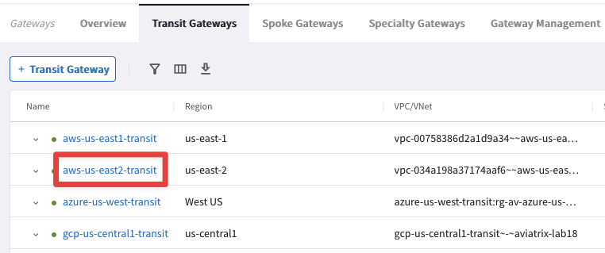 Figure 64: Explore Transit in AWS
Then select the "Route DB" tab.
Pay special attention to “Best Routes”, its prefixes, type and metric value:
 Figure 65: Route DB
Figure 65: Route DB
5.4. Connectivity#
Verify each test instance can ping each other.
Open three terminal windows to SSH to the public IPs of the 3 spoke test instances/VMs in each cloud.
Then ping the private IPs of each other to test the Multi-Cloud connectivity.
Refer to your pod portal for the private IPs or retrieve the private IPs from the topology.
SSH into aws-us-east2-spoke1-test1 (ssh student@public_ip)
SSH into azure-us-west-spoke1-test1 (ssh student@public_ip)
SSH into gcp-us-central1-spoke1-test1 (ssh student@public_ip)
Run ping from the AWS instance to verify connectivity to Azure and GCP:
 Figure 66: Ping from AWS
Figure 66: Ping from AWS
Run ping from Azure VM to verify connectivity to AWS and GCP:
 Figure 67: Ping from Azure
Figure 67: Ping from Azure
Run ping from GCP VM to verify connectivity to Azure and AWS:
 Figure 68: Ping from GCP
Figure 68: Ping from GCP
6. Bonus Question#
What resources are created in the respective clouds when deploying the transit gateway?